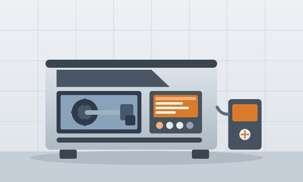
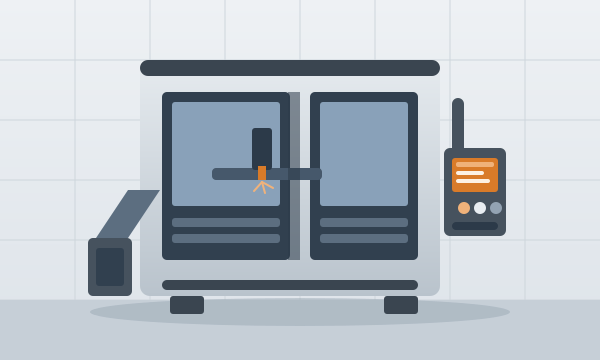
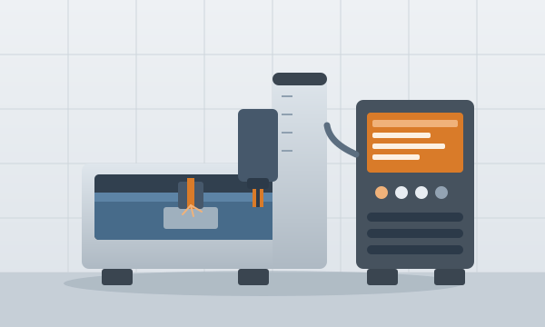

Базовые комплектации - со стойками Fanuc 0i, Siemens Sinumerik 828D или GSK 980. Опции: гидропатрон, револьверная голова с приводным инструментом, барфидер, система сбора стружки, РТК-загрузка.

| Модель | Обработка | Патрон | Мощность | Цена с НДС | Наличие |
|---|---|---|---|---|---|
| СТ-250 компактный, направляющие качения | Ø 250 × 500 мм | 200 мм | 7,5 кВт | 2 390 000 ₽ | склад МСК |
| СТ-320 универсальный | Ø 320 × 750 мм | 250 мм | 11 кВт | 3 150 000 ₽ | склад МСК |
| СТ-400М усиленная станина, японские направляющие | Ø 400 × 1000 мм | 315 мм | 15 кВт | 4 480 000 ₽ | 30-45 дн. |
| СТ-630 тяжёлая серия, плоские направляющие | Ø 630 × 1500 мм | 400 мм | 22 кВт | 7 900 000 ₽ | 60 дн. |

| Модель | Стол / ходы X·Y·Z | Шпиндель | Магазин | Цена с НДС | Наличие |
|---|---|---|---|---|---|
| ФВ-650 3 оси, BT40 | 650 × 450 × 450 мм | 10 000 об/мин, 7,5 кВт | 24 инстр. | 3 090 000 ₽ | склад МСК |
| ФВ-850 3 оси, BT40, опция 4-й оси | 850 × 520 × 520 мм | 10 000 об/мин, 11 кВт | 24 инстр. | 4 260 000 ₽ | склад МСК |
| ФВ-1160 усиленный, коробочные направляющие Z | 1160 × 600 × 600 мм | 8 000 об/мин, 15 кВт | 30 инстр. | 5 740 000 ₽ | 45 дн. |
| ФВ-5Х 5 осей одновременно, BT40 | Ø 650 мм, наклон ±120° | 20 000 об/мин, 18,5 кВт | 40 инстр. | 12 800 000 ₽ | 90 дн. |

| Модель | Назначение | Цена с НДС | Наличие |
|---|---|---|---|
| ЭЭ-45 | Прошивной эрозионный, копировальный, до 400×300 мм | 2 680 000 ₽ | 45 дн. |
| ЭЭ-Пров | Проволочно-вырезной, точность ±0,003 мм | 5 950 000 ₽ | 60 дн. |
| ЛЗ-1500 | Ленточнопильный полуавтомат, Ø 500 мм | 890 000 ₽ | склад МСК |
| ЗУ-400 | Заточный для спирального инструмента до Ø 400 мм | 1 340 000 ₽ | 30 дн. |